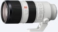

器材库 > 35mm画幅AF变焦镜头 > FE 70-200/2.8 GM OSS

详细规格
镜头类型
远摄变焦镜头
发布日期
2016-02-04
焦距
70mm-200mm
最大光圈
f/2.8
最小光圈
f/22
视角（对角）
34°-12° 30
镜头结构
23片/18组
非球面镜片
3片
低/超低色散镜片
6片
光圈叶片
11片
最近对焦距离
96cm
最大放大倍率
0.25
滤镜口径
77mm
镜头卡口
Sony E
防抖
是
颜色
白色
尺寸
88×200mm
重量
1480g
附件
遮光罩，镜头前盖，镜头后盖，镜头袋，镜头支架
备注
防尘防滴溅功能
该产品暂无存档的网友点评
产品图 / 样片
FE 70-200/2.8 GM OSS
评测 / 相关文章
- 详细内容 （存档）
- 微单大三元新秀 索尼FE 70-200mm GM镜头评测 （存档）
- ［行情］继续悲剧 索尼70-200/2.8镜头再推迟 （存档）
- ［试用］索尼FE 70-200mm GM实拍样张 （存档）
- ［试用］极致画质初体验 试用索尼70-200GM （存档）
- ［资讯］索尼FE 70-200/2.8 GM镜头延期发售 （存档）
- ［行情］土豪专享 索尼70-200/2.8价格不菲 （存档）
- ［资讯］索尼专访：GM镜头专为高像素而生 （存档）
- ［资讯］F2.8大军来袭 解密索尼GM新系列镜头 （存档）
相关文章
- ［影像］FE 70-200mm F2.8 GM风光体验 （原站已下线）
- ［试用］胡渣分享索尼FE70-200/2.8GM （原站已下线）
- ［试用］变焦之王 索尼FE70-200/2.8GM集中营 （原站已下线）
- ［资讯］FE100/2.8STF与70200GM焦外对比 （存档）
- ［试用］索尼GM对位尼康FL 最强70-200/2.8之争 （存档）
- ［行情］继续悲剧 索尼70-200/2.8镜头再推迟 （存档）
- ［试用］索尼FE 70-200mm GM镜头评测 （存档）
- ［试用］索尼FE 70-200mm GM实拍样张 （存档）
- ［试用］极致画质初体验 试用索尼70-200GM （存档）
- ［资讯］索尼FE 70-200/2.8 GM镜头延期发售 （存档）
- ［行情］土豪专享 索尼70-200/2.8价格不菲 （存档）
- ［资讯］索尼专访：GM镜头专为高像素而生 （存档）
- ［资讯］索尼全新高端G系列全画幅镜头发布 （存档）
- ［资讯］F2.8大军来袭 解密索尼GM新系列镜头 （存档）
- ［试用］焦段为王！终于补齐索尼微单大三元！ （原站已下线）